It was almost 10:00pm when I got into Hami. After dinner and shower, it was close to midnight.
The 200 km ride left me exhausted so I was too tired to write up my travel log in bed – well, I just went to bed.
Tomorrow, I could wake up naturally without worrying about using an alarm clock.
I spotted a washing machine in the hotel last night – free of charge.
I felt much more relaxed when the washing machine did the laundry for me.
In addition, its spin drier helped the clothes dry faster.
Here is the hotel that I stayed at.
The hotel owner did cell phone business on the first floor, and his hotel was on the second floor.
The next door was a car wash. I dried my clothes on the washing line in front of car wash store.
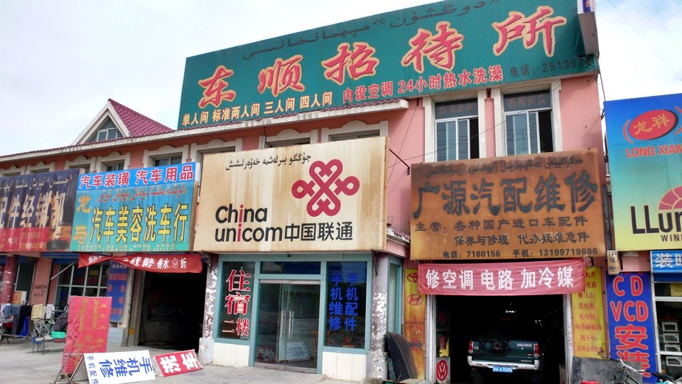
After laundry, I felt relieved and relaxed. The travel log was also finished. So I went for a walk on the street.
I had a Saturday deadline to meet every week.
If I could get online before Sunday, especially on Saturday, I would be greatly pleased.
I lived through consecutive three days in the desert earlier, and only food and drink concerned me.
Now, I was back in the city and started looking for an internet café again.
I took a large bag of little basket buns on the go, and looked for an internet café.
I would ask younger people for internet café information.
Whiling away the time in the internet café, it was delightful to learn that my English trip log translation was getting into full swing.
Thanks to my friends, H2 and MD, for their great help.
I left for lunch at 2:00pm. Having eaten too many noodles, I wanted a change and picked the Shandong dumpling restaurant.
Here again, dumplings were charged by number instead of by weight.
I ordered twenty big meat dumplings and a cucumber with mashed garlic for my appetizer.
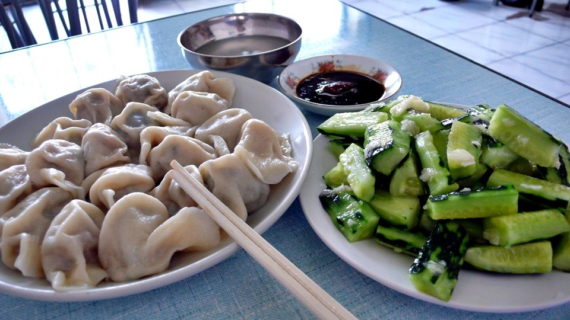
After lunch I went back to the hotel to get Dido, and wandered around the city on my bike.
I had asked around (including the hotel owner, internet café staff, and the lady owner of the dumpling restaurant) for Hami attractions.
They all said there was really nothing worth a visit, which was a sort of sad answer.
Since I had only known Hami as a name in a book, it would be nice to see it with my own eyes.
Today’s goal was to eat melons. How could you miss Hami melons in Hami?
Wasn’t the statue standing in the roundabout holding the famous local produce?
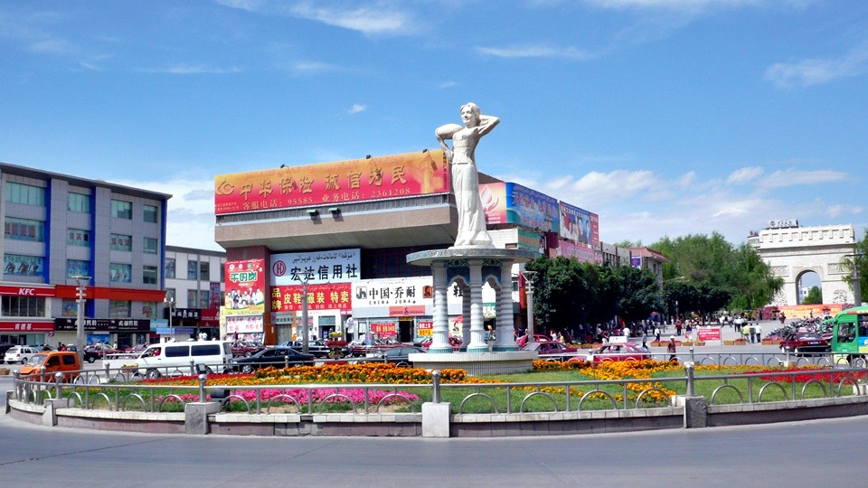
I ventured out without a map, and had to keep track of street names and direction when making turns.
Even though Hami was not a big city, it was not small either.
It would be embarrassing if I got lost and wasn’t able to find my way back to the hotel.
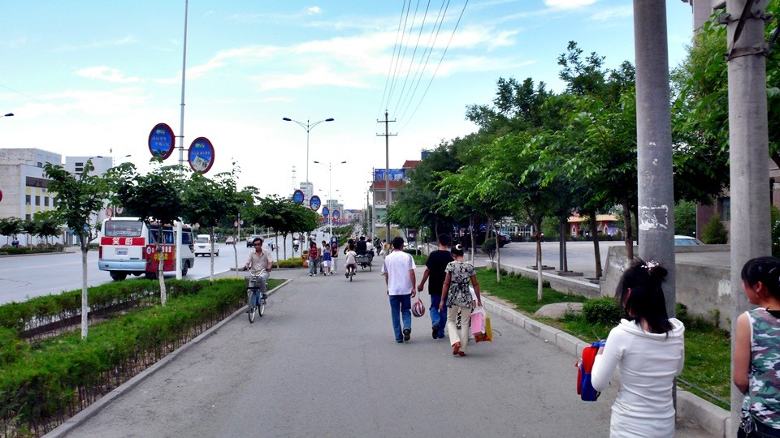
There were many marketplaces in Hami. I stopped by every one that I passed and saw if there was anything I would buy.
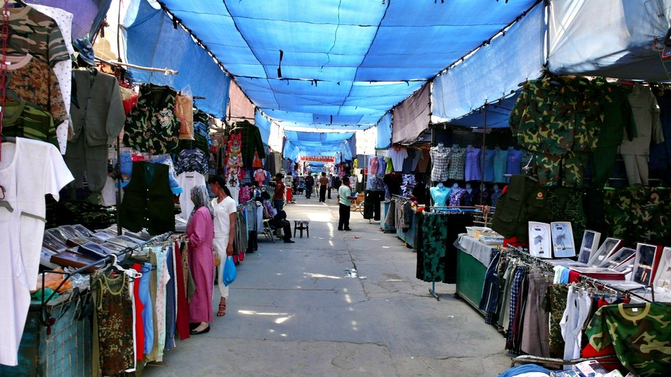
I would like to try Hami melons, but did not see one at the fruit stall on the street.
It turned out that the melons in the center with an elongated oval shape and dark yellow rind were Hami melons,
quite different than the ones sold in Taiwan.
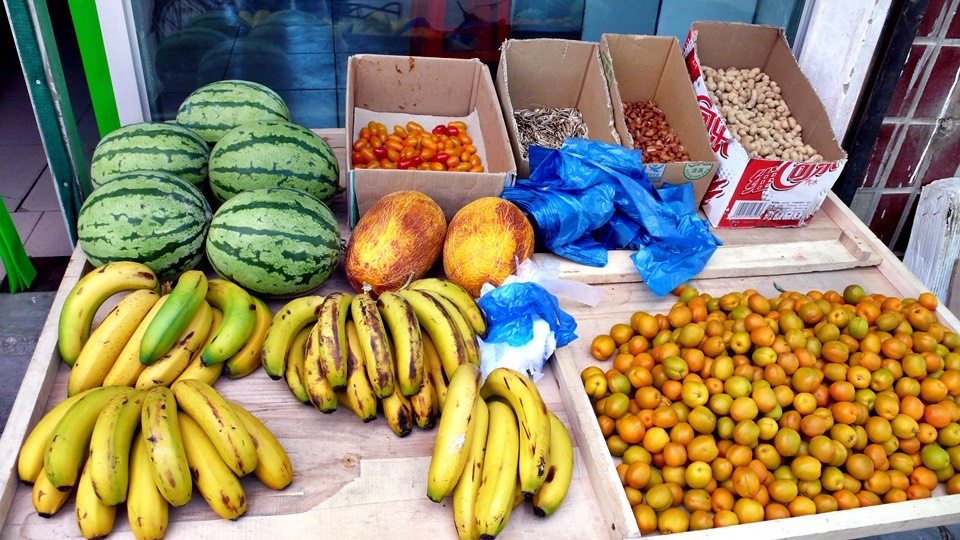
There were some dark patches on the melons’ outer skin. I asked the stall owner if they had gone bad.
He said they changed color after they were completely ripe, very sweet, but if I did not believe him, he would cut one for me.
I did not have to pay or buy if it was not good and sweet.
Because of the store owner’s confidence in his fruit, I bought a Hami melon grown in Hami.
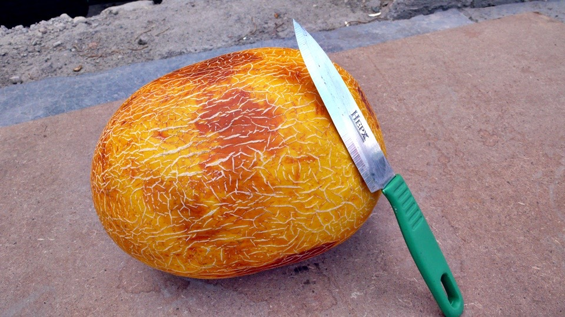
The stall owner gave me a fruit knife to cut the melon on a cardboard myself.
The sharp knife cut through the melon easily, oh! man, it smelled good. The sweet aroma was lingering in the air.
It has very thin skin, only 1 millimeter. After seeding, I could eat up the entire melon.
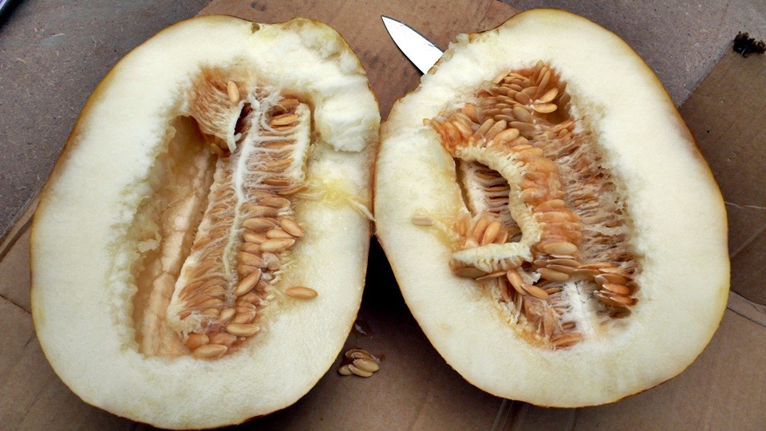
Not only was its appearance different than the Hami melons sold in Taiwan,
round shape and frog-like skin, but also its flesh and flavor which was soft and juicy with the aroma lingering in the mouth.
Sitting by the roadside to enjoy a whole Ham melon myself, today’s goal was fulfilled.
I would just let the rest of the day go by since I was content.
There were always snack bars at the park entrance making demanding kids cry on the ground. Ha, I was an adult with money.
I bought two ice pops and finished them in front of the jealous kids.
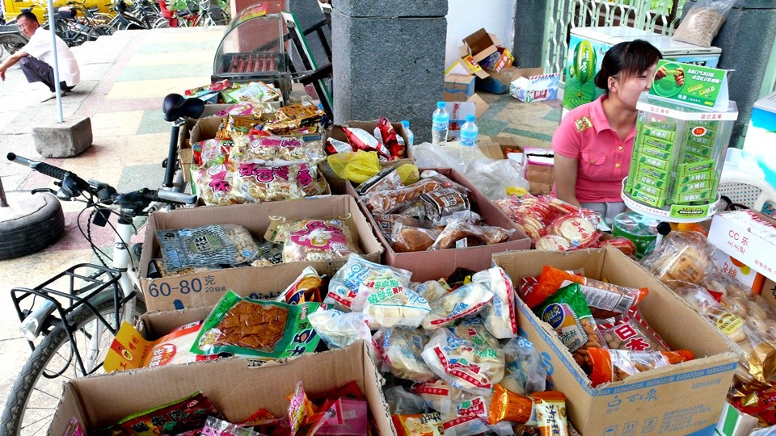
I stopped by a park where many kids were playing.
Hami is in Xinjiang Province which takes up one sixth of the China’s territory – Xinjiang is large.
It borders several countries, such as Russia and Kazakhstan.
Therefore, Xinjiang has people of many other ethnic groups than the Han.
This little kid on the picture spoke to his mom in a language that I totally do not understand.
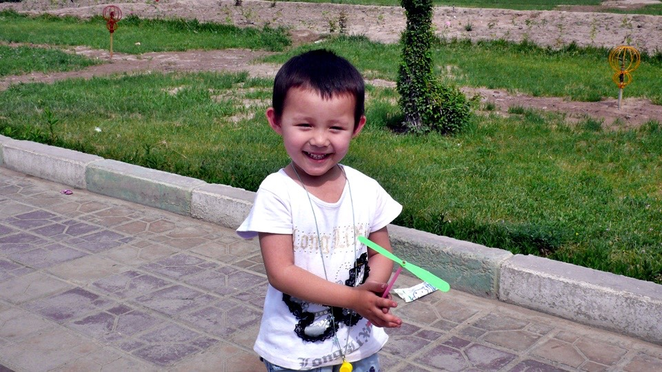
My ways of evaluating a good city focus on two aspects.
1. Public Transportation – Hami has many intercity buses and buses routes.
2. Garbage Cans – the number of the garbage cans reflects public responsibility and it’s attitude to life.
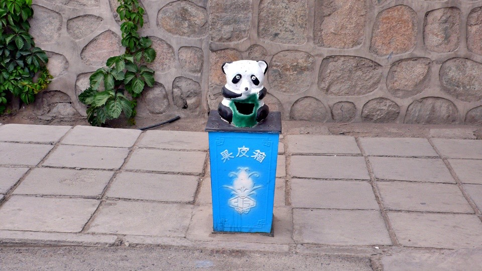
From the aspect of my city standards, Hami is outstanding and you would like it.
I kept track of every roundabout and turn, but after a while, I still got lost.
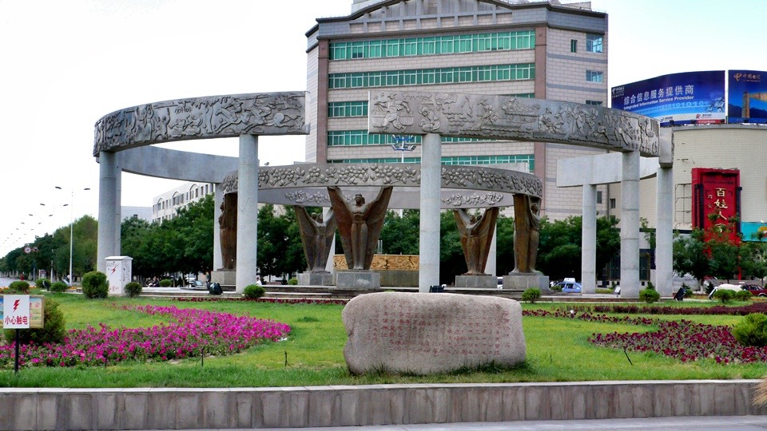
I paid a visit to Hami train station since it was not far.
The whole city including the train station uses bilingual signs in Chinese and a strange alphabet.
After asking around, it turned out the strange language was Uyghur.
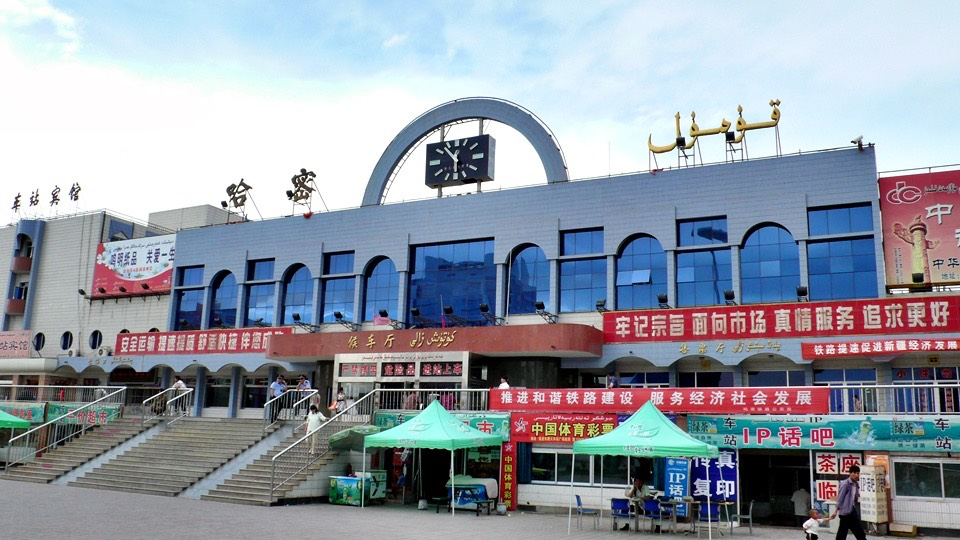
I visited 4 or 5 marketplaces today and each had its own characteristic.
After checking for price, I suddenly felt everything became expensive.
That was because different units of measurement were used.
The Chinese pound was not used here, 1 Chinese pound = 500 gram.
The international System of Units was used here, 1 kilogram = 1000 gram.
Therefore, everything seemed double in price.
Many fruit stalls use the same slogan “Melons Available All Four Seasons”.
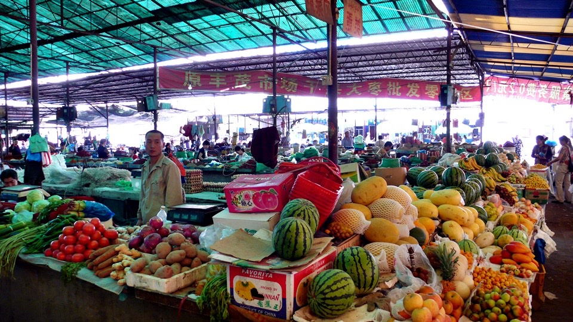
I went back to the BBQ restaurant for dinner and enjoyed my life.
I chatted with Ma Jian Ming, the husband of the restaurant owner’s sister.
Ma used to be a coal miner working at Sandaoling, a backbreaking job.
After marrying, he came to Hami and opened up a clay pot restaurant. He also helped out at his brother-in-law’s restaurant by night.
We were eating grilled fish, grilled tendon, grilled sheep’s hearts, grilled chicken gizzards, and grilled lamb kebab.
Every skewer was one RMB, so I tried everything with beer happily.
I stocked on snacks before going back to my hotel. Snow cakes, three flavor sandwich crackers,
eight chocolate pies and a bag of brown sugar would appease my craving for sweets.
I would be leaving city life again tomorrow. The next large city was Shanshan, 300 km away.
Wouldn’t a vast stretch of desert be waiting for me?
Time to stock up on supplies, I would knew what to load up on if I imagined what I would like to have for breakfast on the bike.